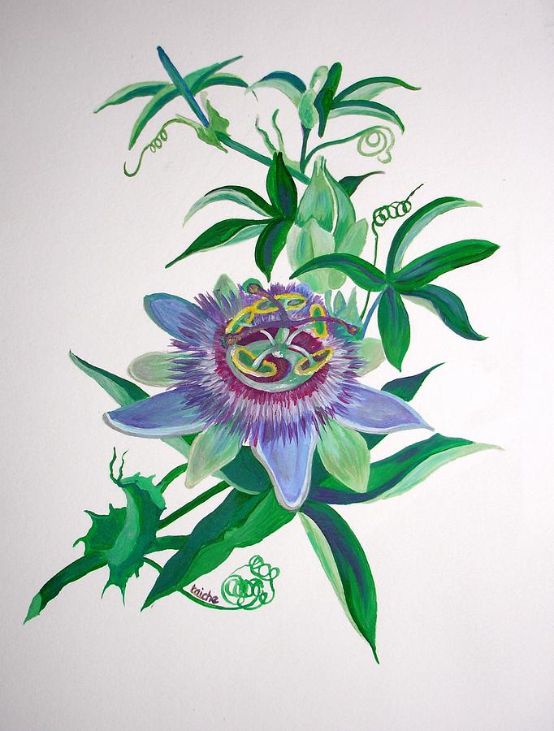

The Passiflora, also known as passion flower or passion vine, is a genus of over 550 species of flowering plants, famous for their intricate, showy, flowers and, in some species, edible fruit (passion fruit). These fast growing, climbing vines are native to the Americas and are often grown as ornamental plants. They are widely used in traditional medicine for their calming effects. They are specifically used to treat anxiety, stress, and insomnia!
